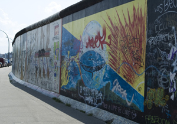
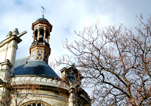
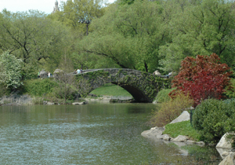
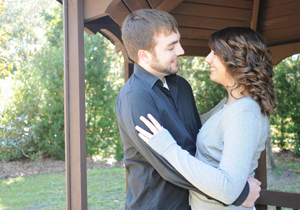
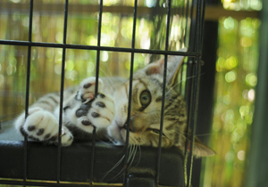
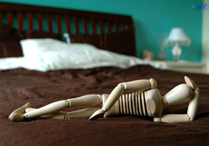
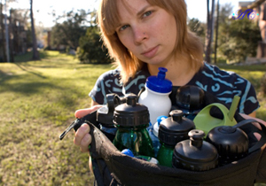

For two weeks during May 2009, I took a photojournalism study-abroad class in Berlin. Each student worked on a photo story about an individual living in Berlin. These are some of the photos I took.

I took these photos while I was studying abroad in Paris in March of 2009.

In May 2007, my mother and I took a trip to New York City to act like tourists for a few days. We stopped by Central Park one of the days and these are some photos that I took.

Just a few photos of my cousin and possibly shots of my friends in the future.

A gallery of animal photos, many taken in Lion Country Safari, a zoo in South Florida.

I've always been a fan of flowers and scenery, so these pictues are a miscellaneous group of flowers and plants that I've taken over the years.

This groups of photos is for anything that I've taken that I like but doesn't really belong anywhere else.

While working for Tower Publications Inc., I took these photos to go with my stories.